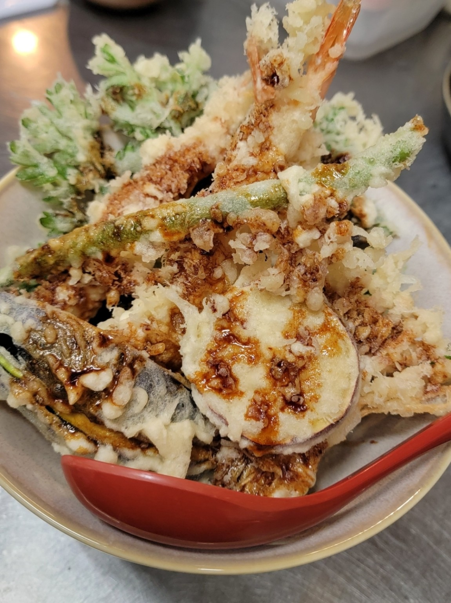
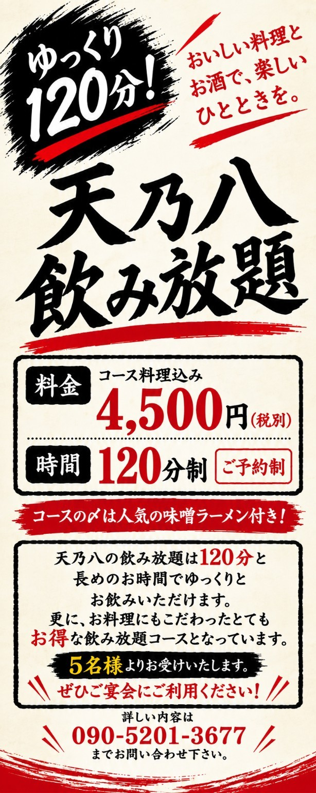

夜営業のご予約について
夜営業でご予約をいただく際、スムーズにお料理をお出しすることができるよう可能な範囲で何品か事前に決めていただけると助かります。
もちろんその場でのご注文でも大丈夫です。
お客様が少しでも心地よく飲食していただけるようスタッフ一同頑張ります。
おいしい料理とお酒で、
楽しいひとときを。
ANDROID APP · TESTER WANTED
私が知り合いの方にお願いして作っていただいた、愛用のアプリがあります。
お客様ごとのメニュー作成をはじめ、簡単なスケジュール管理やお金の管理などもできる、とても便利なアプリです。
このたび、正式な一般公開に向けて始動することになったそうで、「ぜひ色々な方にお試しで使っていただきたい」とお話をいただきました。
そこで、天乃八のホームページをご覧いただいている皆様の中で、少しでも興味のある方がいらっしゃいましたら、ぜひアプリのテストにご参加いただけると嬉しいです。
皆様のご協力をどうぞよろしくお願いいたします。
大変恐縮ですが、無料でのテスター募集が難しいため、7円だけご負担をお願いいたします。そのかわり、もし気に入っていただければ、テスト終了後の正式公開時には300円となりますが、7円でご購入いただいた方は、正式公開後に300円となっても、同じGoogleアカウントで追加料金なしで引き続きご利用いただけます。ぜひお試しください。こちらの希望数に達しましたら、7円での提供は終了となりますのでご了承ください。Androidスマートフォンをお持ちの方が対象です。
① Googleアカウントでグループに参加したあと、② を押してテスト参加登録をしてください。
その後、表示されたGoogle Playの案内からアプリをインストールできます。
※ 参加前はテストページが開けない場合があります。Android端末でお試しください。
ランチは不定期営業です。ご予約は前日までにお願いいたします。
ランチ営業・名物天丼を見る富士吉田市中曽根の居酒屋「天乃八（てんのや）」。
蔵王牛をはじめとする国産牛から作った自家製牛脂をたっぷり練りこんだ、至福の自家製餃子。
名物の揚げたて天丼や、北海道より取り寄せたこだわりの味噌ラーメンなど、たくさんのお料理を心を込めてご用意しています。
おひとり様からご宴会まで、お気軽にお越しください。
結婚式など各種二次会も大歓迎！
夜営業でご予約をいただく際、スムーズにお料理をお出しすることができるよう可能な範囲で何品か事前に決めていただけると助かります。
もちろんその場でのご注文でも大丈夫です。
お客様が少しでも心地よく飲食していただけるようスタッフ一同頑張ります。
お客様から「おすすめは何ですか？」とよく聞かれます。
何を注文しようか迷ったときは、ぜひお刺身の盛り合わせ、自家製餃子、唐揚げ、もつ焼き、とん平焼き、カプレーゼなどをお試しください。
どれも自信を持っておすすめしたいお料理です。
皆様のご来店を、スタッフ一同心よりお待ちしております。

揚げたての天ぷらを贅沢に盛り付けた、天乃八自慢の一品。

蔵王牛をはじめとする国産牛の自家製牛脂をたっぷり練り込んだ餃子。

北海道から取り寄せたこだわりの味噌を使用。
天乃八のお料理を写真でご紹介します。
料理の写真を見るご宴会は最大30名様までご利用いただけます。
気の合う仲間とのお集まりや、職場のご宴会に。
天乃八のお料理とお酒で、楽しいひとときをお過ごしください。
当店のコース料理は、グランドメニューと当日のおすすめメニューの中から組み合わせてご用意しています。
一般的なコース料理のような前菜やお椀などではなく、当店名物の自家製餃子や味噌ラーメンをはじめ、サラダ、唐揚げ、天ぷら、ミニ天丼などの中から、6〜7種類のお料理をお出ししています。
グランドメニューをご覧になって、コースに加えてほしいお料理がございましたら、ご予約の際に遠慮なくお申し付けください。
コース料理は5名様より承ります。
お席のみのご予約でも、メニューから何品か事前にお選びいただけますと、当日お待たせすることなく、スムーズにお料理をご提供できます。
もちろん、ご来店後のご注文も承ります。
3,000円（税別）
5名様より承ります。ご宴会に一番おすすめのコースです。
ご予算に合わせて1,500円〜2,500円（税別）のお料理もご用意できます。
メニューからお好きな料理を選んでいただく、単品料理の事前予約も承ります。
4,500円（税別）

お料理6品＋〆は人気の味噌ラーメン付き！
飲み放題120分／5名様より／ご予約制